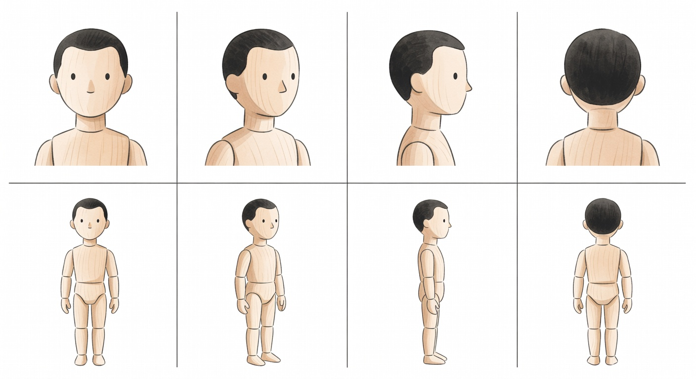
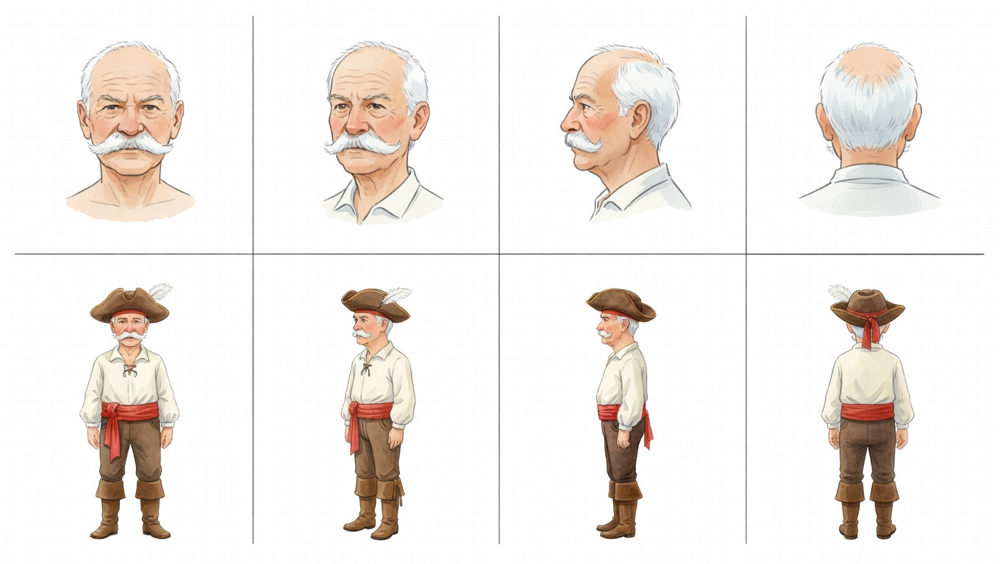
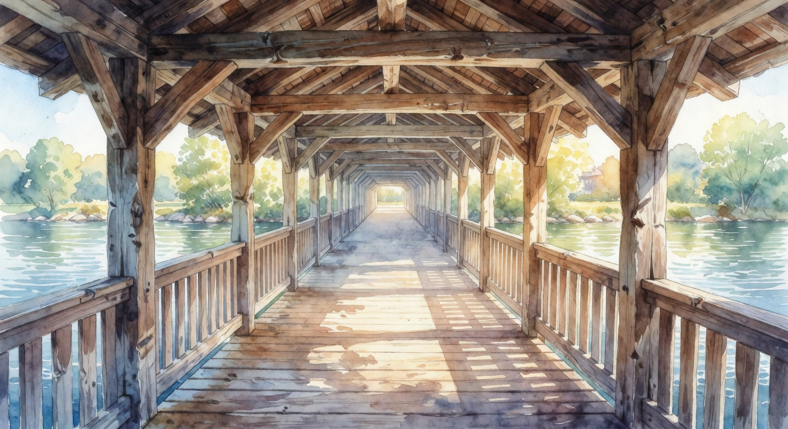
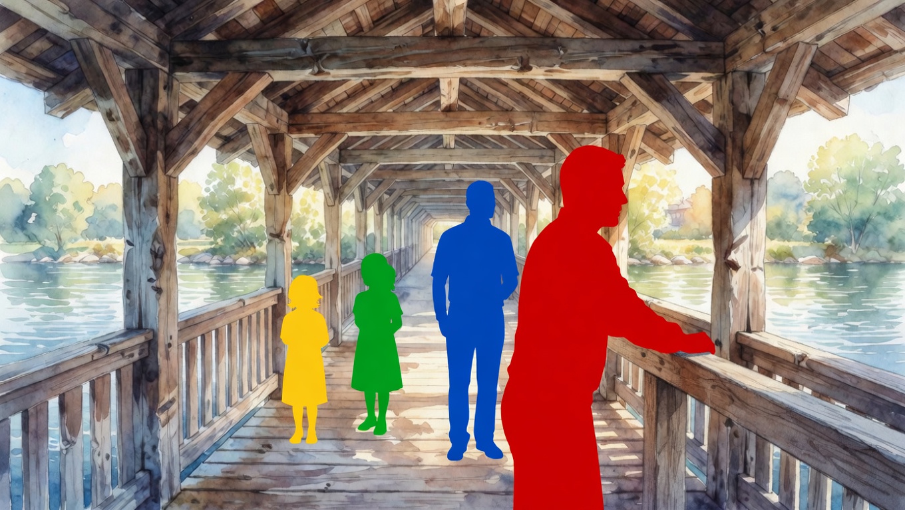
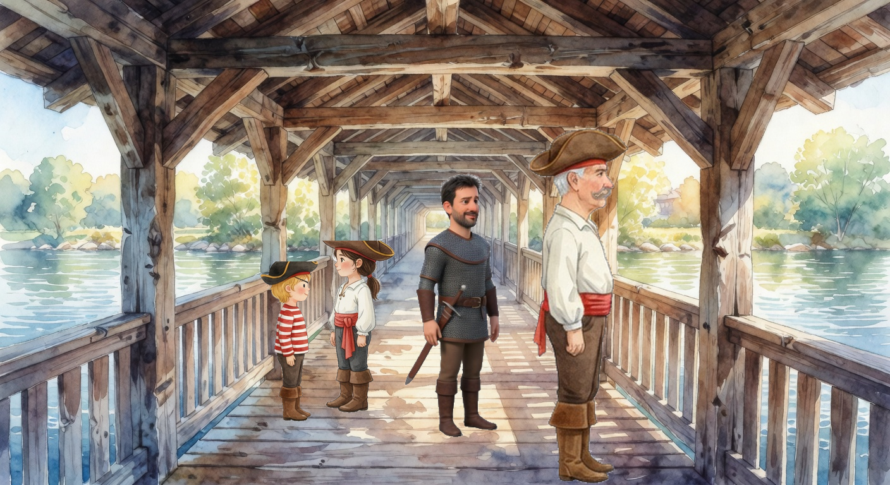
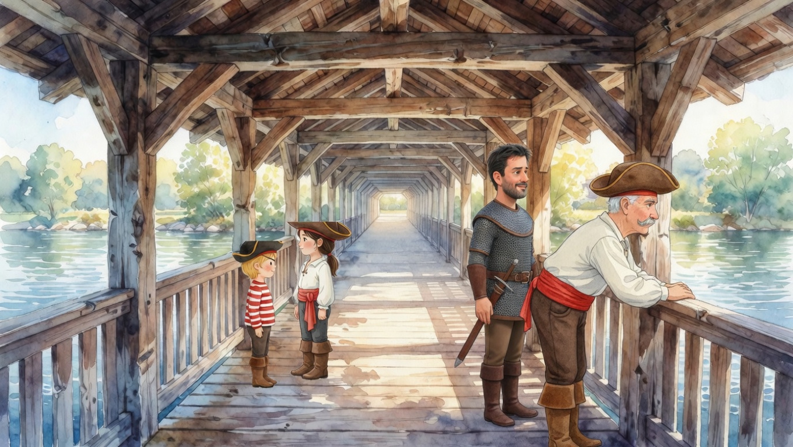

How page illustrations are built when the scene composite generation mode is enabled. The mode supplements the existing direct-prompt page generator with an explicit character placement step: characters are first painted into the scene as flat-colour silhouettes by Grok, then the script substitutes the real character cutouts at the detected positions.
MODEL_DEFAULTS.enableSceneComposite in server/config/models.js. Default false. Existing direct-prompt path remains the default. Flip the flag to opt a story into the composite path.
The direct-prompt page generator (Grok or Gemini, single call with a long scene prose) produces a working image most of the time, but it has three recurring weaknesses on multi-character scenes:
The composite mode addresses all three by separating where the character goes (Grok decides via blocking) from what the character looks like (a pre-rendered 2×4 sheet, identity-locked).
A single watercolour image showing eight standardised pose views of an artist’s mannequin. Generated once for the entire project; reused for every character. Stored at tests/_outputs/phantom/phantom_grok_watercolor_single_2026-05-11-20-08-16.png.

The phantom is the layout anchor for every character’s 2×4 sheet — Grok copies its 8-cell layout exactly when rendering each character. See scripts/test-phantom-generate.js and prompts/styled-costumed-avatar-2x4.txt.
One sheet per character per costume. Same layout as the phantom but the cells are rendered as the actual character in the target art style and costume. Three reference inputs:
generateStyledCostumedAvatar output.One Grok edit call produces the 2×4 sheet. Cost ~$0.02 per character per costume. See scripts/test-character-from-phantom.js, variant A (paint-by-numbers framing).

Cell index map:
| Cell | Pose | Usage in scene composite |
|---|---|---|
| 1 | head — front | not used by scene path (face refs go elsewhere) |
| 2 | head — three-quarter | not used |
| 3 | head — profile | not used |
| 4 | head — back | not used |
| 5 | body — front | pose: 'front' |
| 6 | body — three-quarter (facing camera-left) | pose: 'threeQuarter' |
| 7 | body — profile (facing camera-left) | pose: 'profile' |
| 8 | body — back | pose: 'back' |
flip: true on the cast entry — the script mirrors the cell horizontally before pasting.
For every page that uses the composite path, the pipeline runs four steps. Step 3 is local; the rest are single Grok API calls.
One grok-imagine-image generation call. The prompt is the scene’s setting only — no characters. Example for a Holzbrücke scene:
An old Swiss covered wooden bridge — the historic Holzbrücke in Baden —
interior view looking down its length. Wooden beams overhead, planks
underfoot, open railings on both sides. Daylight streaming through.
No people in this image — completely empty bridge. Watercolor children's
storybook style.
One grok-imagine-image edit call on Image 1. The prompt names each character’s colour, position description, and direction. Grok paints flat-colour silhouettes into the scene; the background pixels remain identical. Example for 4 characters:
Keep the wooden bridge background EXACTLY as it is — every plank, beam,
and river ripple must remain pixel-identical. Only ADD four flat-colour
silhouette figures:
- ONE RED silhouette (#E60000): a full-grown man in the centre-right
foreground, body in PROFILE facing right, leaning over the railing.
- ONE BLUE silhouette (#0050D0): an adult man, three-quarter facing
right, behind the red figure on his left side. About two-thirds size.
- ONE GREEN silhouette (#00B050): a small girl, left midground, three-
quarter facing right. About half the size of the red figure.
- ONE YELLOW silhouette (#F0C000): a small boy, left of the green
silhouette, three-quarter facing right. Same size as the green figure.
Every silhouette is one solid uniform colour. No text.
No API call. Four sub-steps in sceneComposite.js:
{x, y, width, height} per character.cellIdx = POSE_CELL[pose] where POSE_CELL = {front: 5, threeQuarter: 6, profile: 7, back: 8}.rembg service at http://127.0.0.1:5000/remove-bg (with white-threshold fallback if the service is unreachable). Trim transparent borders. Flip horizontally if flip: true.bbox.x + bbox.width/2, vertical bottom at bbox.y + bbox.height. Composite onto Image 1 (the clean background, never the blocking).
flip: true. No colour fringes because we never composited the silhouettes onto Image 1 — they only exist in Image 2 for bbox detection.One grok-imagine-image edit call on Image 3. Soft prompt: blend the pasted edges, harmonise lighting, apply the scene action. Direction is preserved (already correct in the cutouts).
Refine this children's book illustration. Real characters have been pasted
onto a clean scene background at the correct positions, sizes, and body
directions. Blend each character into the scene: harmonise watercolor
lighting, soften pasted edges, add subtle shadows on the ground. Preserve
identity, face, hair, costume, position, size, and body direction EXACTLY.
Apply the scene action: ${finalAction}. Watercolor children's storybook
style. NO TEXT.
| Shortcut | What breaks |
|---|---|
Generate Image 1 and Image 2 in two separate grok-imagine-image generate calls (instead of generate + edit) | The two backgrounds disagree (different roof angle, different stone positions). Bbox coords from Image 2 don’t align with Image 1’s geometry. Figures land in the wrong place. |
| Composite cutouts on Image 2 (the blocking) instead of Image 1 | Coloured silhouette pixels leak around the cutouts (cutouts are slimmer than silhouettes). Pass 1 interprets large leftover patches as capes/cloaks rather than erasing them. |
Skip the flip flag | All characters face the camera’s LEFT (the 2×4 default direction). Scenes that need everyone facing right come out with bodies pointing away from the action. |
| Skip the rembg call (white-threshold fallback) | Anti-aliased white edges around the figure remain opaque → bright halo on the watercolour background. rembg gives clean alpha edges. |
| Pick the wrong cell from the 2×4 | Figure renders at a different angle than the silhouette in the blocking. Inconsistent with the scene action. |
The unified story prompt (prompts/story-unified.txt) emits per-scene metadata for each character. The composite path needs two new fields alongside the existing position / perspective:
| Field | Values | Maps to |
|---|---|---|
pose | front, threeQuarter, profile, back | Cell index in the 2×4 (5, 6, 7, 8 respectively) |
flip | true if character faces the camera’s RIGHT, false if camera’s LEFT | Horizontal mirror of the cell before paste |
The Sonnet outline picks both based on scene action and character position. Examples:
| Scene fragment | Pose | Flip |
|---|---|---|
| A watches B from the side | profile / threeQuarter | true if B is to A’s right, else false |
| A walks away from the camera into the distance | back | — |
| A faces the reader, addressing them | front | — |
| Over-the-shoulder shot of A watching B | back / threeQuarter for A; front for B | per layout |
Defined in server/config/models.js:
enableSceneComposite: false, // Global kill switch for the scene-composite
// pipeline. When true, page generation routes
// through server/lib/sceneComposite.js (3 Grok
// calls per page, character placement via
// colour-silhouette blocking). When false, the
// legacy direct-prompt path runs unchanged.Per-story opt-in via inputData.composite === true on the story input (defaults to the flag value).
The flag gates a single decision point in server.js at the page-generation step:
const useComposite = MODEL_DEFAULTS.enableSceneComposite === true
&& inputData?.composite !== false;
if (useComposite) {
await runSceneComposite(...);
} else {
await runDirectGeneration(...); // existing path
}| File | Role |
|---|---|
server/lib/sceneComposite.js | New. The 3-Grok-call pipeline (generate clean BG → edit-add silhouettes → composite locally → edit-blend). Ports the test script verbatim. |
server/lib/grok.js | Existing. generateWithGrok and editWithGrok handle the API calls. |
server/config/models.js | Add the enableSceneComposite flag. |
prompts/story-unified.txt | Extend per-character scene metadata with pose and flip. |
server.js | Wire the flag at the page-generation branch. |
scripts/test-phantom-generate.js | Phantom regeneration (one-time, locally). |
scripts/test-character-from-phantom.js | 2×4 character-sheet generation (production reuse via shared lib). |
scripts/test-scene-composite.js | The validation harness for the full pipeline. |
| Stage | Provider | Calls | Cost | Latency |
|---|---|---|---|---|
| Phantom (one-time, project-wide) | Grok | 1 total | $0.02 once | ~6 s |
| 2×4 character sheet (per character per costume) | Grok | 1 per character | $0.02 each | ~6 s |
| Clean background (per page) | Grok | 1 | $0.02 | ~4 s |
| Blocking (per page) | Grok edit | 1 | $0.02 | ~5 s |
| Pass 1 blend (per page) | Grok edit | 1 | $0.02 | ~7 s |
| Per-page total | — | 3 | $0.06 | ~16 s |
The legacy direct-prompt path is 1 Grok call per page (~$0.02, ~5 s). Composite triples the cost but eliminates the placement / identity / costume failures. Reserve for stories where these matter (multi-character pages, story-relevant interactions).
scripts/test-scene-composite.js (#E60000, #00B050, #0050D0, #F0C000) were tuned for the watercolour style; other styles may need recalibration.# Generate or regenerate the phantom (one-time, then reuse)
node scripts/test-phantom-generate.js --mode=single --backend=grok
# Generate a character's 2×2 baseline avatar (production path)
node scripts/test-costumed-2x4.js \
--face=tests/fixtures/demo-photos/berger/Hans.jpg \
--style=watercolor \
--also-2x2 \
--costume="pirate costume, ..."
# Generate the 2×4 character sheet
node scripts/test-character-from-phantom.js \
--face=tests/fixtures/demo-photos/berger/Hans.jpg \
--avatar2x2=tests/_outputs/costumed-2x4/<timestamp>__Hans/2x2.png \
--backend=grok \
--variant=a \
--costume="..."
# Run the full scene composite pipeline (3 Grok calls)
node scripts/test-scene-composite.js --only=G_holzbruecke_3imgAll outputs land under tests/_outputs/ (gitignored).